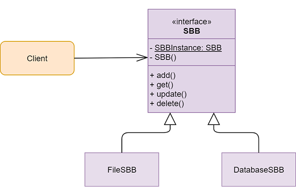
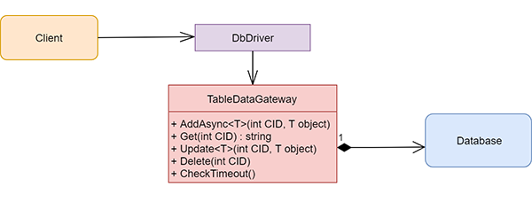

Wzorce
Strategia
W przypadku tego projektu jako Singleton jest zaimplementowana główna klasa do obsługi całości funkcji zapewnionych przez bibliotekę.
Singleton
W przypadku tego projektu jako Singleton jest zaimplementowana główna klasa do obsługi całości funkcji zapewnionych przez bibliotekę.

Table Data Gateway
Dany wzorzec służy do komunikacji z bazą danych. Tworzona jest tylko jedna klasa zapewniająca pełną obsługę bazy danych, czyli zapis danych, odczyt, aktualizacja lub usunięcie danych konwersacji, które zostały już zakończone.
